Explore Como
A Brief History
Como sits at the southern tip of its lake where Romans founded Novum Comum and Julius Caesar settled colonists on the Alpine road to Raetia. Medieval commune wars and silk weaving, revived in the nineteenth century, shaped lakeside villas and rationalist architecture. Funiculars and steamer routes connected the city to Bellagio and the Swiss border, leaving a centre where cathedral spires, rationalist monuments, and waterfront promenades frame Lombardy's mountain trade.
Attractions Map
Top Sights & Activities
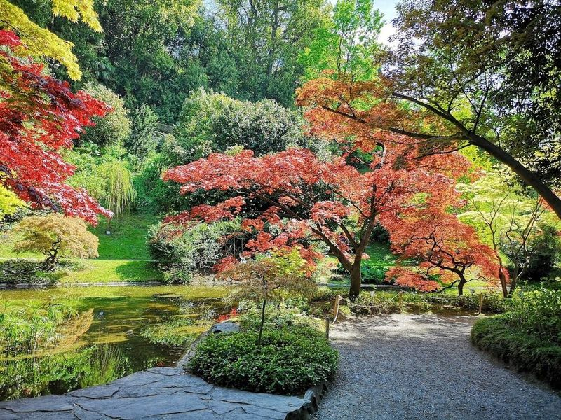
I Giardini di Villa Melzi
I Giardini di Villa Melzi, located in Bellagio, Italy, is a botanical garden surrounding the 19th-century neo-classical mansion of Villa Melzi d'Eril. The garden features picturesque trails, statues, pavilions, and views of Lake Como. While the villa itself is not open to the public, travellers can explore the serene botanical gardens and capture its beauty through leisurely strolls or specialized tours.
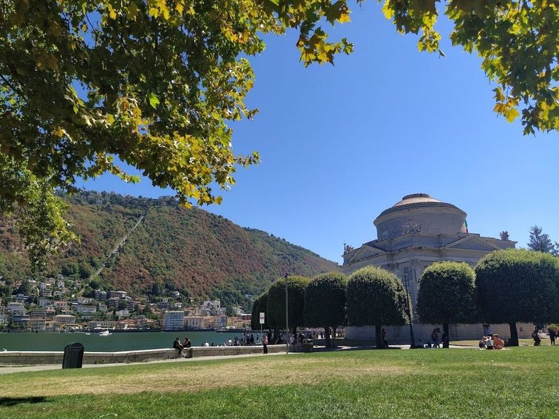
San Giovanni
San Giovanni is an annual celebration that takes place on the last weekend of June at Lake Como. This event marks the beginning of summer and is rooted in the history of Isola Comacina and the Lario region. It commemorates the assault on the island during battles with Barbarossa, offering a reenactment of this historical event. The festival is a significant cultural experience that brings together locals and travellers to celebrate and honor this historical legacy.
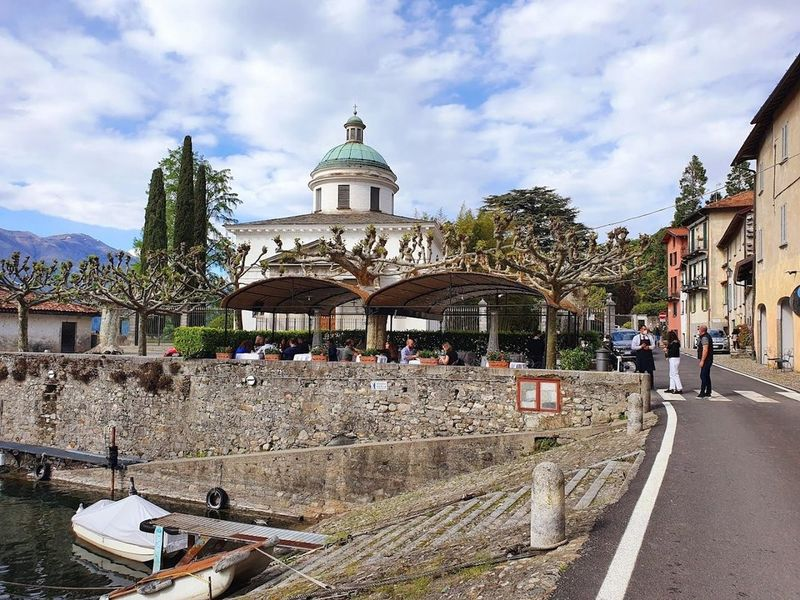
Bellagio
Bellagio, also known as The Pearl of the Lake, is a town located on Lake Como. It is celebrated for its landscapes and easy accessibility by ferry or car. travellers can take a leisurely stroll to Punta Spartivento for views of Lake Como. The site is catalogued as a tourist attraction.
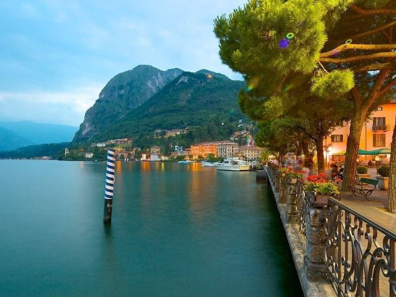
Menaggio
Menaggio is a town in Lombardy, Italy, situated on the western shore of Lake Como. It boasts three frazioni: Croce, Loveno, and Nobiallo. The area offers various attractions such as the quirky La Ca di Radio Vecc museum in Bellano and the hidden gem of a lido in Menaggio with swimming pools, a sandy beach, and a deck extending over the water.
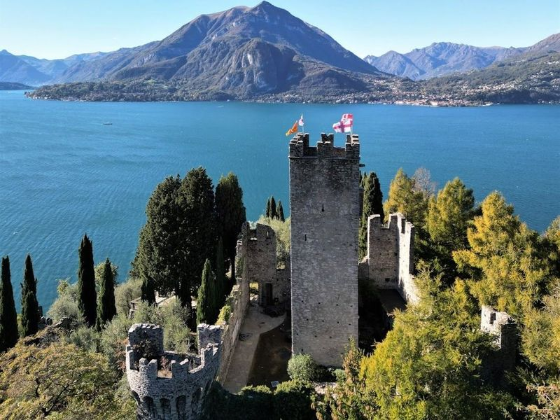
Castello di Vezio
Located on a promontory overlooking Varenna in the center of Lake Como, Castello di Vezio is a 12th-century castle with a rich history as a military outpost. It offers views of the lake and surrounding villages from its main tower and garden. The castle provides tours of its dungeons, features a falconry, and boasts a garden adorned with statues.
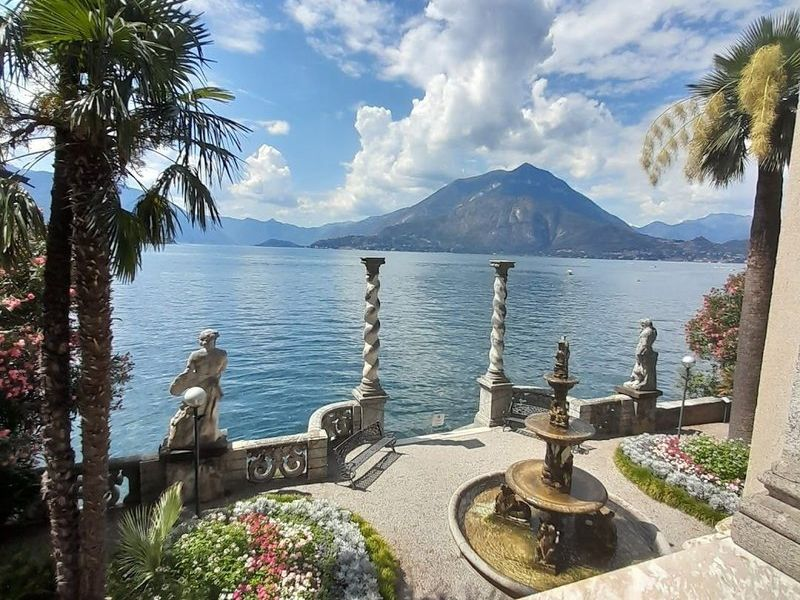
Villa Monastero garden
Villa Monastero is a historic waterfront mansion located in the Province of Lecco, boasting terraced gardens adorned with statues. The villa is a major attraction due to its rich history, picturesque landscape, and various services offered on the premises. The House Museum within the estate showcases opulent 1800s decor across 14 fully furnished rooms, providing travellers with an immersive experience.
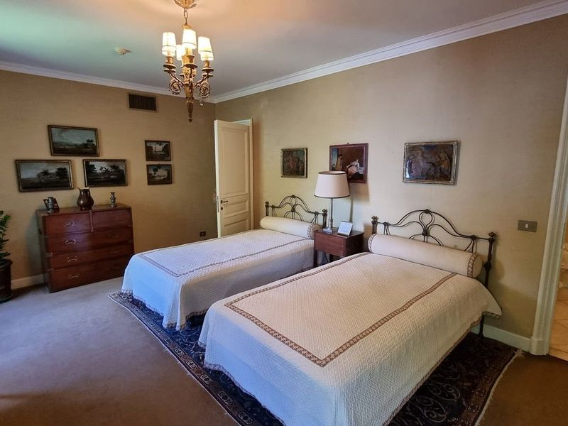
Villa del Balbianello
Villa del Balbianello is a captivating 18th-century villa located in Lenno, on the picturesque Lake Como. Originally built by Cardinal Angelo Maria Durini, it has been home to various wealthy families and notable figures throughout history. The villa boasts a splendid loggia offering enchanting views and is adorned with frescoes and gardens. Its former owner, adventurer Guido Monzino, enriched it with an exclusive art collection and artifacts from his global expeditions.
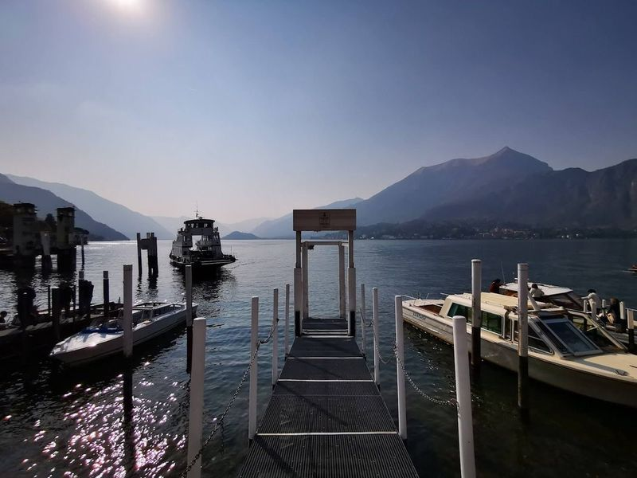
Punta Spartivento
Punta Spartivento, also known as the "tip that divides the winds," is located at the extreme tip of Bellagio, where Lake Como splits into three branches: Lecco on the right, Como on the left, and the northern part in between. This picturesque spot offers panoramic views of Lake Como and is surrounded by the majestic Larian mountains famously depicted in Alessandro Manzoni's novel "The Betrothed.".
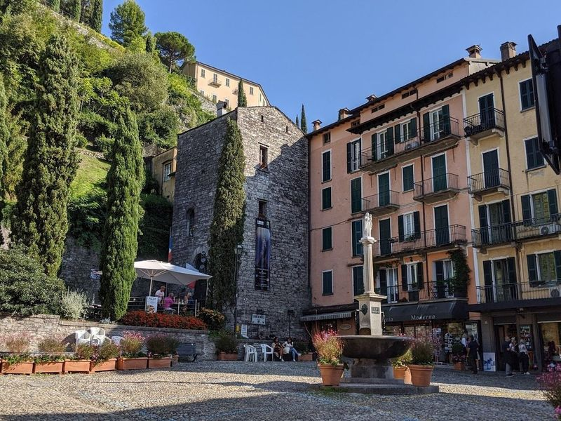
Basilica of St. Giacomo
The Basilica of St. Giacomo, a Romanesque church dating back to the 12th century, is a must-visit for art and history enthusiasts. The dark interiors welcome travellers with a altar, frescoes, sculptures, and side chapels that evoke medieval Rome. The basilica houses notable artworks such as the 'Deposition of Christ' by the Perugino school and an archaic 12th-century cross.
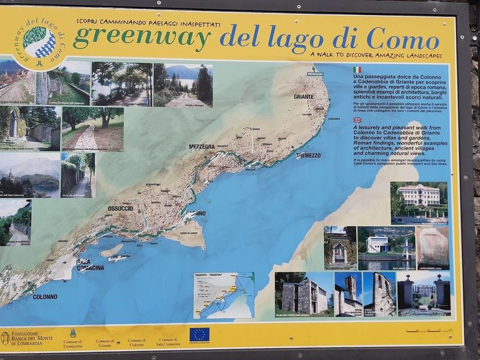
Greenway del Lago di Como
Greenway del Lago di Como is a picturesque 10 km trail along the western shore of Lake Como, used for leisurely walks and family outings. The route starts in Colonno and ends in Griante, passing through villages like Sala Comacina and Ossuccio. Along the way, hikers can admire baroque churches, traditional Italian architecture, and lakeside gardens.
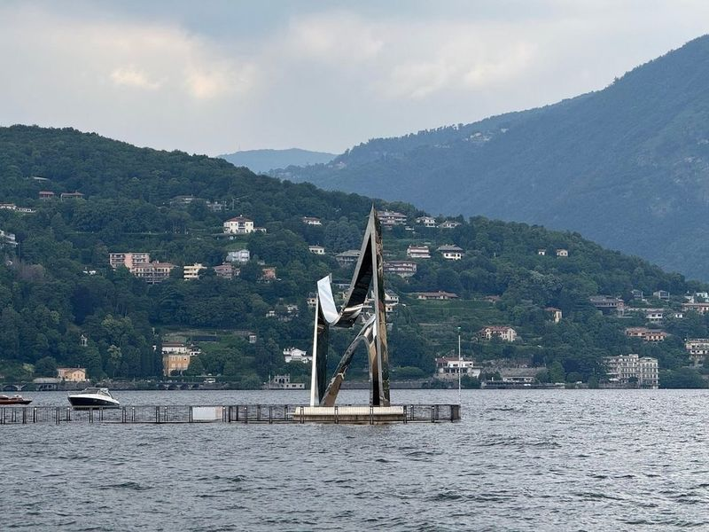
Life Electric
Life Electric is a modern outdoor sculpture located near Piazza Cavour in Como, dedicated to Alessandro Volta, the inventor of the electric battery. Created by Daniel Libeskind, this 16.5-meter high stainless steel monument stands as an homage to the renowned scientist. The sculpture reflects the surrounding light and scenery beautifully, especially at sunset. It is situated on one of three adjacent piers along the waterfront and offers a unique viewing experience.
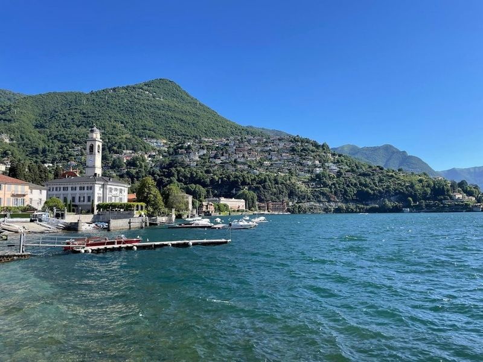
Villa Olmo
Villa Olmo is a grand 18th-century neoclassical villa located on the shores of Lake Como. It was commissioned by Innocenzo Odescalchi and has hosted notable figures such as Napoleon Bonaparte and Giuseppe Garibaldi. The villa's park once featured a famous ancient tree that inspired its name. travellers can enjoy the lakeside promenade from Villa Geno to Tavernola, passing by villas and taking in picturesque views.